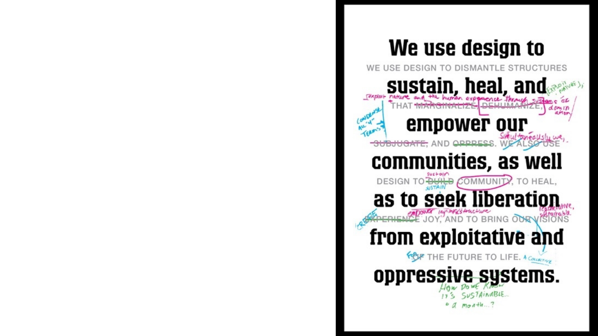

Addressing Gender Bias in Generative
Pretrained Transformer (GPT) Language
Models through Design Justice
Computational Sociology 2022 – Week 10
Lara Dal Molin
PhD student in Science, Technology and Innovation Studies & Sociology
University of Edinburgh & University of Copenhagen
Overview & Objectives of this Lecture
• Illustrate application of
Computational Sociology and
Computational Social Science
• Combination of qualitative and
quantitative methods –
motivation and relationship
• Application of recent research in
Artificial Intelligence
Science and
Technology
Studies
Artificial
Intelligence
Computational
Sociology

Addressing Gender Bias in Generative
Pretrained Transformer (GPT) Language
Models through Design Justice
Language Models
Statistical language models are probability distributions of words and
sentences in a language (Jurafsky and Martin, 2008).
Jurafsky, D. & Martin, J. H., 2008. Speech and Language Processing: An Introduction to Natural Language Processing, Computational Linguistics
and Speech Recognition. 2nd ed. London, United Kingdom: Pearson.
One of the first applications of language models, ELIZA was a rule-
based conversational assistant created by Weizenbaum (1966; 1976).
Weizenbaum, J., 1966. ELIZA - A Computer Program for the Study of Natural Language Communication Between Man and Machine.
Computational Linguistics, pp. 36-45.
Weizenbaum, J., 1976. Computer Power and Human Reason: from Judgement to Calculations. New York, San Francisco: W. H. Freeman and
Company.
Neural Language Models
Recent paradigm shift in Natural Language Processing (NLP), that sees
traditional language models combined with Artificial Neural Networks.
This results in sophisticated, improved text-generation.
Jing, K. & Xu, J., 2019. A Survey on Neural Network Language Models. [Online] Available at: https://arxiv.org/abs/1906.03591
[Accessed 30 November 2021].
+
Large Language Models
Large Language Models (LLMs) are neural language models trained on
extremely large amounts of data. This data is usually organised in
datasets and collected through scraping.
Tamkin, A., Brundage, M., Clark, J. & Ganguli, D., 2021. Understanding the Capabilities, Limitations, and Societal Impact of Large Language
Models. [Online] Available at: https://arxiv.org/abs/2102.02503 [Accessed 8 June 2022].
GPT-3
One of the latest language models by OpenAI. It generates text based
on human prompts, such as this article for the Guardian.
GPT-3. (2020). A robot wrote this entire article. Are you scared yet, human? Retrieved November 17, 2021, from
https://www.theguardian.com/commentisfree/2020/sep/08/robot-wrote-this-article-gpt-3
GPTs are large, neural language models
that can be pretrained and fine-tuned.
Transformers are novel types of Neural
Networks that, through the mechanism
of attention, can incorporate context:
“the animal didn’t cross the street
because it was too tired”.
Vaswani, A. et al., 2017. Attention Is All You Need. Long Beach, California, United
States, 31st Conference on Neural Information Processing Systems (NIPS 2017).
Generative Pretrained Transformers
“Pretrain then Fine-Tune”
Another paradigm shift in NLP. Novel LLM are pretrained on a large
knowledge-base and then fine-tuned to perform specific tasks.
Fine-tuning – or adaptation – consists in the further conditioning of a
language model with additional information on top of training.
Bommasani, R. et al., 2021. On the Opportunities and Risks of Foundation Models. [Online] Available at: https://arxiv.org/abs/2108.07258
[Accessed 2 June 2022].
Applications of LLMs (including GPTs)
Language models are the backbone of numerous technologies:
• Conversational assistants (chatbots) – e.g. Amazon Alexa
• Sentence completion systems
– e.g. Google Search
• Machine translation systems
– e.g. Google Translate

Addressing Gender Bias in Generative
Pretrained Transformer (GPT) Language
Models through Design Justice
Gender Bias in Language Models
Language models, including GPTs, present issues related to bias.
On the Dangers of Stochastic Parrots:
can language models be too big?
In this paper, the authors heavily problematise the scalability approach
in language models, suggesting it leads to stereotyped language in the
context of personal characteristics – especially gender.
• Stereotypes – e.g., hierarchical associations
• Categorisation – e.g., misgendering
Bender, E., Gebru, T., McMillan-Major, A. & Shmitchell, S., 2020. On the Dangers of Stochastic Parrots: Can Language Models Be Too Big?.
Online, ACM Conference on Fairness, Accountability, and Transparency (FAccT).
Timnit Gebru
Timnit Gebru is one of the co-authors of the Stochastic Parrots paper.

Algorithmic Bias in Computer Science
Attempts to address algorithmic bias in Computer Science are
quantitative.
• Gender bias associated to training data - downstream harm (Barocas
et al., 2019)
• Benchmarks for quantification of bias (Vidgen and Derczynskil, 2020)
• Study of AI-generated characters and stories (Lucy and Bamman,
2021)
Barocas, S., Hardt, M. & Narayanan, A., 2019. Fairness and Machine Learning: Limitations and Opportunities. Online: fairmlbook.org.
Lucy, L. & Bamman, D., 2021. Gender and Representation Bias in GPT-3 Generated Stories. Mexico City, Mexico, Proceedings of the 3rd Workshop on
Narrative Understanding.
Vidgen, B. & DerczynskiI, L., 2020. Directions in Abusive Language Training Data, a Systematic Review: Garbage In, Garbage Out. PLoS ONE, 15(12), pp. 1-
32.
Algorithmic Bias: Sociology and Beyond
Algorithmic Bias is an extremely active field of research beyond CS.

Algorithmic Bias: Sociology and Beyond
Main contributions from Science and Technology Studies and Sociology
include the following concepts:
• Dataset curation – inspired by archival history and librarianship (Jo
and Gebru, 2020; Birhane and Prabu, 2021)
• Algorithmic auditing – notably Brown, Davidovic and Hasan (2021)
Birhane, A. & Prabhu, V. U., 2021. Large Image Datasets: A Pyrrhic Win for Computer Vision?. Waikoloa, Hawaii, United States, 2021 IEEE
Winter Conference on Applications of Computer Vision (WACV).
Brown, S., Davidovic, J. & Hasan, A., 2021. The Algorithm Audit: Scoring the Algorithm that Scores Us. Big Data & Society, 8(1), pp. 1-8.
Jo, E. S. & Gebru, T., 2020. Lessons from Archives: Strategies for Collecting Sociocultural Data in Machine Learning. Online, Proceedings of the
2020 Conference on Fairness, Accountability, and Transparency.
PALMS
In a recent paper, researchers at OpenAI suggest that fine-tuning LLMs
on small-scale, curated dataset may be a promising method for
mitigating bias associated with sensitive topics.
Solaiman, I. & Dennison, C., 2021. Process for Adapting Language Models to Society (PALMS) with Values-Targeted Datasets, San Francisco,
California, United States: OpenAI.
PALMS
These are the base and fine-tuned model’s responses to a prompt.
Solaiman, I. & Dennison, C., 2021. Process for Adapting Language Models to Society (PALMS) with Values-Targeted Datasets, San
Francisco, California, United States: OpenAI.

Content Warning
The following slide contains offensive and gendered language.

PALMS
These tables show the top descriptive word in each model using a co-
occurrence metric.

PALMS
PALMS considers the meaning of factuality in the context of sensitive
topics and inquires who should inform stances in this space.
In other words, who should decide what is biased and what isn’t?
Through critical lenses, we can reformulate this question.
Who should have the power to decide what is biased and what isn’t?
Solaiman, I. & Dennison, C., 2021. Process for Adapting Language Models to Society (PALMS) with Values-Targeted Datasets, San Francisco,
California, United States: OpenAI.

Addressing Gender Bias in Generative
Pretrained Transformer (GPT) Language
Models through Design Justice
Design Justice
Pioneered by Sasha Costanza-Chock
(2020), Design Justice advocates the
involvement of historically marginalised
communities in technology design
processes.
Costanza-Chock, S., 2018. Design Justice, A.I., and Escape from the Matrix of
Domination. Journal of Design and Science.
Costanza-Chock, S., 2020. Design Justice: Community-Led Practices to Build the
Worlds We Need. Cambridge, Massachussetts, United States: The MIT Press.

Back to PALMS
In my project, I answer the
question posed by PALMS through
Design Justice. Individuals and
communities that are usually
targeted by algorithmic gender
bias should form stances on what
constitutes bias.
Methodology
In my project, I use an open-source model called GPT-J. This is
comparable in size and functionality to OpenAI’s GPT-3 but is less
restricted in terms of both permissions and prompting.
EleutherAI, 2021. About. [Online] Available at: https://www.eleuther.ai/about/ [Accessed 29 October 2021].

Qualitative Methods
Participants are currently recruited in partnership with PrideSoc.
1. Workshops: co-designing gender-oriented prompts for GPT-J
2. Feeding the prompts to the model, which generates responses
3. Scoring responses for gender bias on 1-5 scale
4. Participants answer the prompts themselves – their responses
constitute a small, curated dataset
Quantitative Methods
After the workshops, GPT-J is fine-tuned on the curated dataset.
1. Data is pre-processed to be understandable by language model.
2. Fine-tuning happens in Google Colab through directions provided
by EleutherAI – online access to GPU and TPU.
3. Fine-tuned model is tested through further scoring in a workshop.
Hypothesis: performance differences shed light on the effectiveness of
Design Justice + PALMS for mitigating gender bias in GPTs.

Addressing Gender Bias in Generative
Pretrained Transformer (GPT) Language
Models through Design Justice
What is this project trying to achieve?
• Combine methodologies in Computer Science and Social Sciences to
propose a hybrid qualitative-quantitative solution
• Explore ontological and epistemological relationships and potential
overlaps between these traditions
Hypothesis 1: performance differences shed light on the effectiveness
of Design Justice + PALMS for mitigating gender bias in GPTs.
Hypothesis 2: GPT-J fine-tuned on curated dataset might outperform
PALMS framework specifically on gender.
Key Takeaways